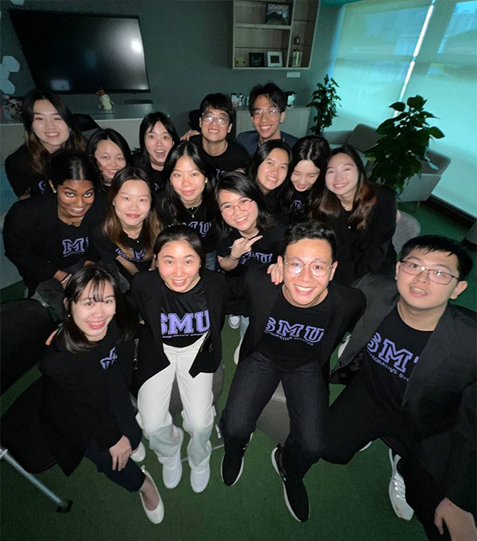

Cosmic Odyssey 🌠
Embark on a Cosmic Odyssey unlike any other! The galaxy's most renowned superheroes are assembling a team of elite recruits to join them in a mission of cosmic proportions 🦸🏻♂️ Your challenge? Infiltrate the depths of the CIS-verse and capture the nefarious Multiverse Villains before they wreak havoc across dimensions 💥 Together with your facilitators, you will be participating in gravity-defying simulations, interstellar navigation challenges, and mind-expanding puzzles 🗝️ With the fate of the universe hanging in the balance, failure is not an option.
Are you ready to join forces with the Cosmic Odyssey superheroes and become a guardian of the Multiverse? 🚀🪐☄️
Register here by 22 July!
CIS Newsletter Final Edition
HELLO, HELLO, HELLO!

Hello D3s, and welcome to CIS! I'm Leon, a Year 2 Individualised Major student embarking on my major titled Urban Development Governance. I'm also President of SMU inCISive, the College's student constituent body.
The CIS experience is one of exploration and discovery. As you progress through your D3 year, you'll be spoilt for choice with the plethora of activities lined up for you. This journey will lead you to a time of soul-searching towards the end of the academic year, where you will chart your own path in the Individualised Major, or perhaps move on to another school in SMU where you still have the chance to pursue an Individualised Second Major. It's a journey of excitement, of growth, and admittedly one of challenges, but I encourage you to embrace the uncertainty and trust that you are in good hands.
I hope you are just as excited to begin your CIS journey as we are to welcome you to our family. We will be holding our orientation camp, Cosmic Odyssey, on 5 & 6 August 2024 -- do sign up ASAP! See you around :)

⋆｡°✩🪐FRESHMEN ORIENTATION🪐✩°｡⋆

Academic Briefing For AY2024 Freshmen
Friday, July 19, 2024
7.00PM – 8.30PM (SGT)
Register below to receive the link to this online briefing that’s co-delivered by Prof Fiona (CIS Associate Dean of Undergraduate Education) and Roger (inCISive Academic Director).
Roger Chua
inCISive Academic Director Harro our dearest freshmen,
Harro our dearest freshmen,
I’m Roger, the Academic Director of inCISive, our student body here at CIS.
At this point, you’ve probably heard about the BOSS bidding system in SMU — but, how does it work? How should I prepare for bidding (which starts on 2nd August 10am)? There’s lots of things to take note of, but we will take good care of you guys. Hop on to our specially-arranged Academic Briefing for freshmen happening on 19 July 2024 (Friday) at 7pm and we will bring you through all that you will need to know!
For those who want to scratch an itch, feel free to DM us your questions on Telegram via @sleepingismyparttimehobby (Roger, inCISive, Academic Director) or @NadVong (Nadia, inCISive, Academic Deputy).
See ya at our Acad Briefing!
PREVIEW OF THE YEAR AHEAD
We have an exciting line-up of events in the year ahead that you can participate in:
Jeanette Choo
Incoming CIS Student
Looking forward to spending the next four years together as we pursue the path of learning, growth, adulting, and exploration of endless possibilities here in CIS. Excited to see you all soon!
Zen Ho
Incoming CIS Student
Ahoy fellow CIS sailors! As we set our sails on a new voyage, may we never forget to give ourselves over more often, to that which makes you lose track of time, that which sparks your soul! Your spark is the translation of the ephemeral into an observable form, that which only you have been able to observe and chosen to translate. In a way, the ephemeral is you, and it’s already beautiful.
Elizabeth Chan
Incoming CIS Student
I’m looking forward to being able to share ideas and thoughts with some of the most unique people I’ve met, as well as being a part of the close-knit community that is CIS. I’d like to extend my warm welcome to my peers, and do say hi if we see each other around! Cheers!
Cheryl Soong
Incoming CIS Student
Looking forward to starting a new chapter with the CIS community!”
Joel Tan
Incoming CIS Student
CONNECT WITH US!
We absolutely cannot wait to meet you when term starts! Until then, stay well, follow our channels, and sign up for the Academic Briefing and Freshmen Orientation!
CIS newsletter – 1st Instalment
CIS newsletter – 2nd Instalment